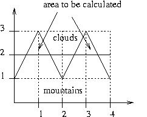

Aragorn
This problem takes you back in time to Middle Earth, shortly before Sauron gets
overturned. Here your task is to help Aragorn, also known as Strider, to
succesfully lead an army of elves over the Misty Mountains. Unfortunately the
weather, which has been fair for the last few days, has turned nasty. To cross
the Misty Moutains the army must reach the pass of doom. This wouldn't be a
problem if the skies were clear, but today it is very cloudy. Therefore an army
of orcs may be hiding in the clouds. As the chief counselor of Aragorn your task
is to help decide, if it is safe to lead the army to the pass. This depends on
how much of the mountains is covered with clouds.
Input
The input consists of several testcases. In each testcase you will be given a
description of the clouds and a description of the mountains. Both will be given
as a series of connected line segments, the first series of line segments
describing the clouds, the second the mountains. Everything "above" the first series
of line segments is covered with clouds. Everything "below" the second series of
line segments belongs to the silhouette of the mountains, as shown in the following picture.

The series of line segments describing the clouds and the moutains will be given as series
of points. Two neighbouring points form a line segment. Each point
consists of a x-coordinate and y-coordinate.
The first number in each test case is an integer c, c ≤ 1000,
denoting the number of points describing the clouds, followed by c pairs of
floating point numbers, each describing a point. The next number is an integer
m, m ≤ 1000, denoting the number
of points in the silhouette of the mountains, followed by m pairs of floating point
numbers, each describing a point. Each sequence of line segments will begin at
(0,y) and end at the same x-coordinate as the other sequence.
The x-coordinates of the points
will grow steadily. Each y-coordinate will be greater than or
equal to zero. You should parse until c = 0.
Output
You are to calculate how big an area of the mountains is covered by the clouds.
Ouput the area covered by the clouds. The number should contain two digits after the
decimal point. Be careful about precision error when the output is zero. Never print -0.00 instead of 0.00.
Sample Input
2
0.0 3.0
4.0 3.0
5
0.0 1.0
1.0 3.0
2.0 1.0
3.0 3.0
4.0 1.0
2
0.0 2.0
4.0 2.0
5
0.0 1.0
1.0 3.0
2.0 1.0
3.0 3.0
4.0 1.0
2
0.0 0.0
4.0 0.0
5
0.0 1.0
1.0 3.0
2.0 1.0
3.0 3.0
4.0 1.0
2
0.0 0.0
4.0 0.0
5
0.0 1.0
1.0 3.0
2.0 1.0
3.0 3.0
4.0 1.0
5
0.0 1.0
1.0 3.0
2.0 1.0
3.0 3.0
4.0 1.0
3
0.0 2.0
2.0 1.0
4.0 2.0
3
0.0 2.0
2.0 1.0
4.0 2.0
5
0.0 1.0
1.0 3.0
2.0 1.0
3.0 3.0
4.0 1.0
0
Sample Output
0.00
1.00
8.00
8.00
0.40
2.40
FAU Local Contest 2004-07-10
Author: Tilmann Spiegelhauer